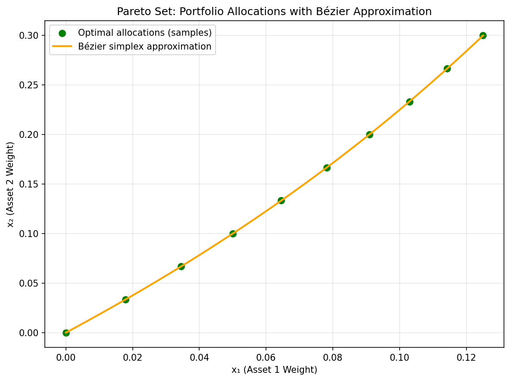
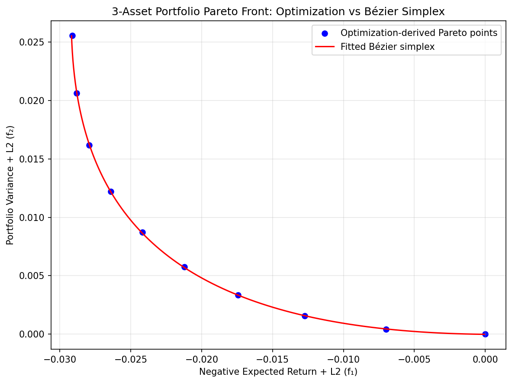

Robust Portfolio Management
In financial engineering and asset management, the most classical real-world application is Markowitz’s mean-variance portfolio optimization [Mar52]. Investors and fund managers seek to simultaneously maximize expected returns and minimize risk (often modeled as the variance of returns). This framework is widely utilized by institutional pension funds (e.g., GPIF), treasury departments, and risk management teams to quantify trade-offs and build consensus on asset allocation decisions.
However, in practice, estimating the covariance matrix from limited observations or highly collinear assets often leads to numerical instability. To resolve this, it is common to introduce a strongly convex regularization term, such as an \(L_2\) norm penalty on the asset allocation weights or a turnover penalty to suppress excessive trading compared to a previous portfolio \(x^{\text{prev}}\) [Qi].
This formulation effectively creates a three-objective optimization problem over the allocation weights \(x \in \mathbb{R}^n\):
Subject to classical constraints such as the budget constraint \(\mathbf{1}^T x = 1\) and long-only constraints \(x \ge 0\).
For weights \(w\), the scalarized Hessian is \(2w_2\Sigma+2w_3\lambda I\). A positive turnover weight guarantees strong convexity, but that guarantee can disappear on the face \(w_3=0\); the return objective alone is linear. The unconstrained strongly convex theorem in What is Bézier simplex fitting? therefore cannot be applied to this entire constrained three-objective formulation without further work.
Fitting a Bézier simplex gives a continuous approximation of sampled trade-offs. Uniqueness comes from the reference problem’s assumptions, rather than the surrogate representation. Weighted quadratic subproblems can be solved offline, with their decisions and objective values retained as training responses. Extensions such as CVaR or uncertain market inputs change the reference problem and require their own parameterization and validation.
Numerical Experiments
To illustrate Bézier simplex fitting on a portfolio Pareto front, we conducted an experiment using a three-asset mean-variance problem with L2 regularization to ensure strong convexity.
Problem Setup:
Decision variable: \(x \in \mathbb{R}^3\) (portfolio weights, unconstrained)
Expected returns: \(\mu = [0.05, 0.12, 0.08]\)
Asset variances: \(\text{diag}(\Sigma) = [0.10, 0.15, 0.08]\)
Regularized objectives:
Experiment Procedure:
Sample 10 weight vectors \(w = (w_1, w_2)\) uniformly on the 1-simplex from \((1,0)\) to \((0,1)\).
For each \(w\), solve \(x^*(w) = \arg\min_x [w_1 f_1(x) + w_2 f_2(x)]\) using L-BFGS-B.
Collect the Pareto front points \((f_1(x^*(w)), f_2(x^*(w)))\).
Fit a degree-3 Bézier simplex to the weight–objective pairs and another to the weight–decision pairs.
Evaluate the fitted Bézier curve on 101 test weights.
The maximum error on the test weights is about \(10^{-4}\), i.e., below 0.5% of the range of each objective. The regularization weight of \(f_1\) matters: the weighted-sum solution \(x^*(w)\) is a rational function of \(w\), and with a weaker regularization (e.g., \(0.05\|x\|^2\)) its poles come close to the weight simplex and a cubic Bézier curve visibly deviates from the Pareto front.
 |
 |
Pareto set. |
Pareto front. |


The complete example script is available at examples/generate_portfolio_pareto.py.
Inputs, allocations and objective values
The numerical example uses two regularized objectives, so its input is a
segment of priority weights [w1, w2]. It differs from the three-objective,
budget-constrained formulation above: it has no budget or nonnegativity
constraints, and its first objective includes an allocation penalty. Its
three decision outputs are unconstrained coefficients rather than guaranteed
portfolio percentages. The figure illustrates surrogate construction for
that stated toy problem.
For a diagonal covariance with entries \(s_j\), stationarity gives
The denominator stays positive on the weight segment, but the solution is rational rather than polynomial. A cubic fit approximates this map. It does not become exact merely because the optimization objectives are quadratic. Reducing the regularization can make the map vary sharply near an endpoint, which explains why the same degree and sample count can then perform worse.
Fit and validate the decision map
Store one row of weights and three allocation outputs for each reference
solve. Fit them with BezierSpace.simplex(1, degree=3) and
Samples(weights, allocations). A separate two-output fit gives the front.
Keep objective scaling explicit: variance and return have different units,
and changing their scales changes the interpretation of the input weights.
See Output scaling for output transformations.
At held-out weights, compare the predicted allocations with the reference optimizer, then evaluate the original objectives on those allocations. Report the maximum error in each output in addition to average error. The quoted test-grid result describes these constants and this parameter range; it is not a guarantee for another covariance estimate or asset universe.
For a constrained extension, check the budget residual, minimum holding and any turnover or exposure limits. Least squares does not automatically preserve such inequalities between training rows. Projecting a prediction onto a feasible set can restore feasibility but changes its objectives; evaluate the projected allocation as well.
Choosing capacity and updating the model
Increasing degree gives more flexibility, while adding samples improves coverage of the same chosen function class. Select them using fresh reference solves, especially near active-set transitions in a constrained portfolio. Adding ridge to the Bézier fit shrinks its controls; it does not replace the allocation regularization in the original portfolio objective.
The fitted map assumes fixed expected returns, covariance and objective definitions. When those inputs change, the old surrogate represents the old problem. Refit it, or introduce a bounded independent scenario parameter as a product factor when an explicit scenario model is available. Arbitrary market changes are not represented by moving along the priority segment.
The workflow is a numerical approximation example. Evidence for a practical allocation model also requires evaluation under the intended data and constraints. See Sampling and grids for boundary coverage and Cross-validation and degree search for validation-based capacity selection.